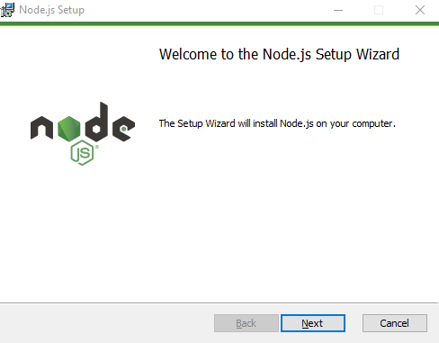

Step 1: Download Node.js Installer
In a web browser, navigate to https://nodejs.org/en/download/.
Click the Windows Installer button to
download the latest default version. At the time this article was written, version 10.16.0-x64 was
the latest version. The Node.js installer includes the NPM package manager.
Step 2: Install Node.js and NPM from Browser
1. Once the installer finishes downloading, launch it. Open the downloads link in your browser and click the file. Or, browse to the location where you have saved the file and double-click it to launch.
2. The system will ask if you want to run the software – click Run.
3. You will be welcomed to the Node.js Setup Wizard – click Next.
4. On the next screen, review the license agreement. Click Next if you agree to the terms and
install the software.
5. The installer will prompt you for the installation location. Leave the default location, unless
you have a specific need to install it somewhere else – then click Next.
6. The wizard will let you select components to include or remove from the installation. Again,
unless you have a specific need, accept the defaults by clicking Next.
7. Finally, click the Install button to run the installer. When it finishes, click Finish.

Step 3: Verify Installation
Open a command prompt (or PowerShell), and enter the following:
node –v
The system should display the Node.js version installed on your system. You can do the same for NPM: